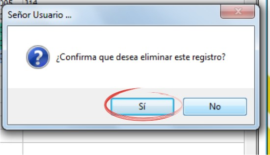

Administración de Contenedores¶
Ubicación¶
| Módulo: | Real Q |
|---|---|
| Grupo: | Parámetros |
| Descripción: | Administración de especificaciones por Contenedor |
Introducción¶
Defina los Contenedores que serán usados en los despachos de productos sólidos. Los contenedores tienen códigos autogenerados.
Crear un Contenedor¶
Ejecute la opción Administración de especificaciones por Contenedor
- Haga click en
Nuevo
En el campo de texto “Descripción”, digite el nombre/identificador del contenedor
En el campo de texto “Capacidad contenedor” digite, en números o letras, especificando la unidad, la capacidad del contenedor. Ejemplo: “40 kilos”
- Haga click en
Guardar
Modificar un Contenedor¶
Ejecute la opción Administración de especificaciones por Contenedor
Seleccione en la grilla el Contenedor a Modificar, haciendo click sobre el
- Presione el botón
Modificar
En el campo de texto “Descripción”, digite el nombre/identificador del contenedor
En el campo de texto “Capacidad contenedor” digite, en números o letras, especificando la unidad, la capacidad del contenedor. Ejemplo: “40 kilos”
- Haga click en
Eliminar un Contenedor¶
Ejecute la opción Administración de especificaciones por Contenedor
Seleccione en la grilla la cuba a eliminar, haciendo click sobre el
- Presione el botón
Eliminar
En la ventana de confirmación pulse ‘Sí’
No podrá eliminar un Contenedor que tenga un análisis adjudicado.
